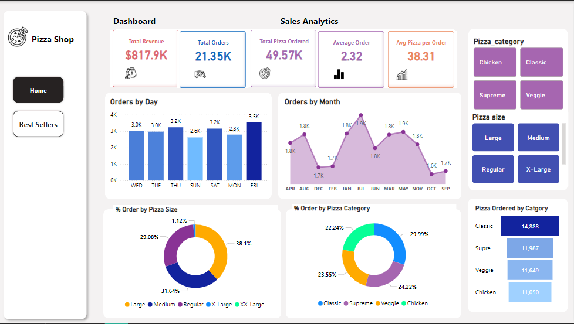

General Observations
- Strong Revenue Performance: With a total revenue of $817,860.05 across 21,350 orders, the business demonstrates consistent sales activity. The average order value is approximately $38.30 (total revenue ÷ total orders).
- High Pizza Demand: Selling nearly 50,000 pizzas highlights a robust customer base and demand for the product.
Category & Size Preferences
- Revenue Leaders:
- Classic pizzas dominate the sales categories, contributing $220,053.10 (27% of revenue), indicating customer preference for traditional flavors.
- Large pizzas lead in size preference, generating $375,318.70 (46% of revenue), suggesting customers prefer larger options, likely for sharing or group consumption.
- Low Revenue Options: XX-Large pizzas generate minimal revenue ($1,006.60), indicating a lack of demand or possibly limited availability.
Best-Selling Items
- The Thai Chicken, Barbecue Chicken Pizza, and California Chicken Pizza are the most popular items, with each selling over 2,400 units. These flavors cater to diverse tastes, combining classic and specialty options.
Time-Based Insights
- Busiest Day: Friday is the most active day, with over 3,500 orders. This suggests that customers tend to order more for the weekend, potentially for gatherings or leisure activities.
- Least Busy Day: Sunday sees the lowest orders (2,600), possibly due to reduced social activity compared to Fridays and Saturdays.
Opportunities for Growth
- Upselling & Larger Sizes: Promote larger-sized pizzas to increase sales for higher-priced items like X-Large and XX-Large pizzas.
- Midweek Promotions: With weekdays like Monday and Tuesday seeing fewer orders, targeted discounts or deals could boost sales on these days.
- Focus on Top Categories: Classic and Chicken pizzas are highly popular; introducing variations or combos in these categories could drive more interest.
- Off-Peak Promotions: Sundays could benefit from special campaigns or discounts to encourage weekend-end purchases.
Challenges
- Stagnant Items: XX-Large pizzas and some niche offerings seem underperforming. The business may need to reassess their relevance or adjust pricing and promotion strategies.
- Seasonal Slumps: Consistent engagement during low-performing months like February and December could stabilize annual sales further.